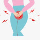

Urethritis
Rx
1. Vial Ceftriaxone 250mg N=1 IM
2. Cap Azithromycin 500mg N=4 2tabs single dose (1g patient and 1g partner )
نکته :
در صورت شک به اورتریت غیر گنوکوکی می توان داکسی سایکلین 100برای 7 روز (2 بار در روز) تجویز کرد.
✳️Urethral discharge: May be yellow, green, brown, or tinged with blood; production unrelated to sexual activity
✳️Dysuria (in men): Usually localized to the meatus or distal penis, worst during the first morning void, and made worse by alcohol consumption; urinary frequency and urgency are typically absent
✳️Itching/stinging: Sensation of urethral itching or irritation between voids
✳️Orchalgia: Pain in the testicles
✳️Worsening of symptoms during the menstrual cycle (occasionally)
✳️Systemic symptoms (eg, fever, chills, sweats, nausea) are typically absent
.
1️⃣ واژینیت
2️⃣ سرویسیت
3️⃣ سیستیت
4️⃣ درماتیت تماسی ( محصولات بهداشتی و شوینده)
Dried semen mistaken for discharge 5️⃣
6️⃣ جسم خارجی
7️⃣ پروستاتیت
8️⃣ آبسه پروستات
9️⃣ اپیدیدیمیت
🔟 PID
1️⃣1️⃣ سیفلیس
Urethral Cancer 1️⃣2️⃣
1️⃣3️⃣ تروما
تصویری برای این نسخه موجود نیست.